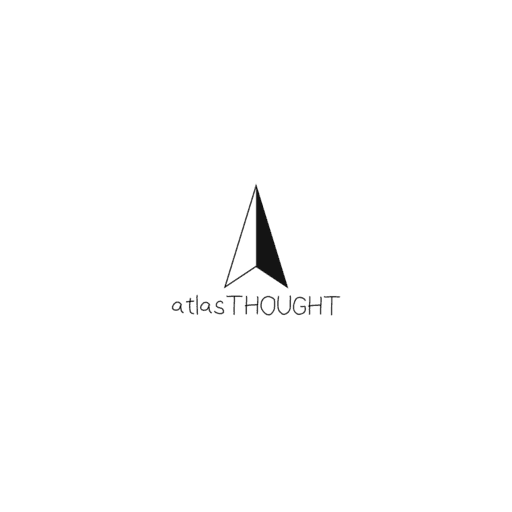

atlasTHOUGHT
atlasTHOUGHTAbout BRIDGE
Created by atlasTHOUGHT, established in 2025, we're building a friendly place for students and curious people to share knowledge and learn from each other.
Our mission
We believe that everyone has valuable knowledge to share and important questions to ask. You sign in with your Google account and get your own profile, helping conversations stay accountable and respectful while giving people a place to learn, share, and ask questions without judgment.
Secure & Moderated
Sign in securely with Google. Posts, comments and uploads are moderated, and you can report or block anyone.
Rich Discussions
Engage in meaningful conversations with nested replies and helpful voting.
Community Driven
Built by the community, for the community. Every voice matters.
Quick to start
One tap to sign in with Google, then set up your profile and start asking, commenting and learning.
What we build
atlasTHOUGHT develops and supports apps centered on useful ideas. Our current community product, BRIDGE - CONNECT & SHARE, brings profiles, topic discovery, discussions, and daily challenges into one place. We also welcome app development and collaboration requests.
atlasTHOUGHT
Established in 2025
We're passionate about creating platforms that empower people to learn, share, and grow together.
